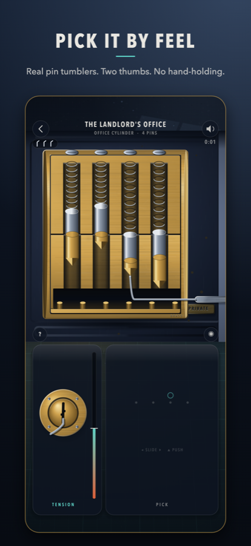
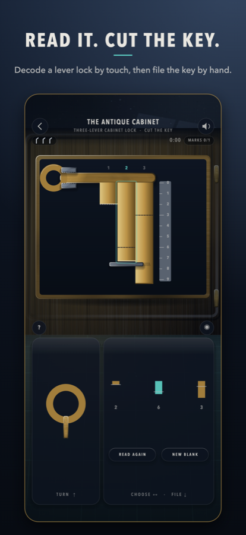
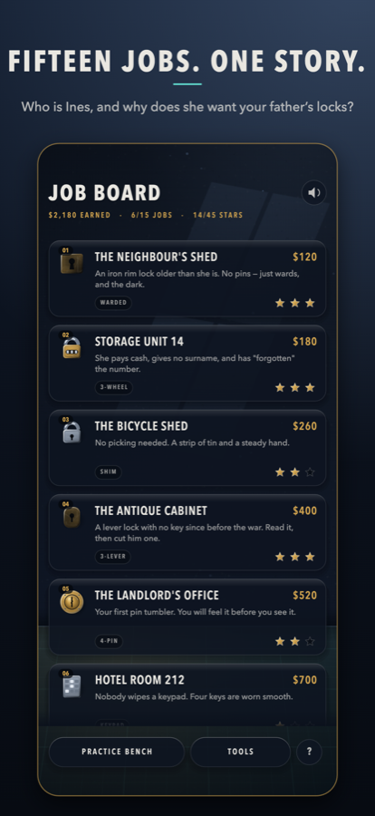

Night work
Locksmith
A casebook of fifteen jobs and seven kinds of real lock, each opened by feel with two thumbs. No timers, no hand-holding, no ads.



What you do
- Pin tumblers — tension with one thumb, set pins with the other. Spools, serrations and paracentric keyways.
- Lever locks — read each lever by touch, pencil the heights, then file a key to match.
- Warded locks, combination padlocks, shims, keypads and safe dials — every one works differently, and every one is taught before you meet it.
- A story — a woman who calls herself Ines keeps hiring you, and every door leads back to your father's locks.
Fair by design
Every lock is seeded and deterministic. Difficulty comes from the mechanism, never from a clock. Every failure is warned before it happens. The game works fully offline, collects nothing, and has no ads or purchases.